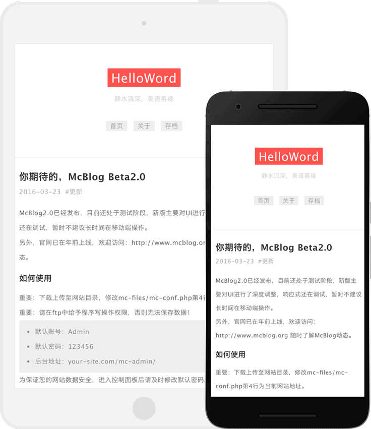
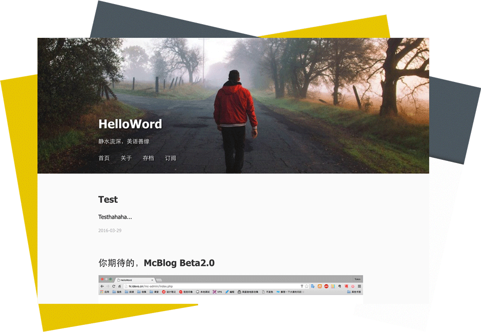
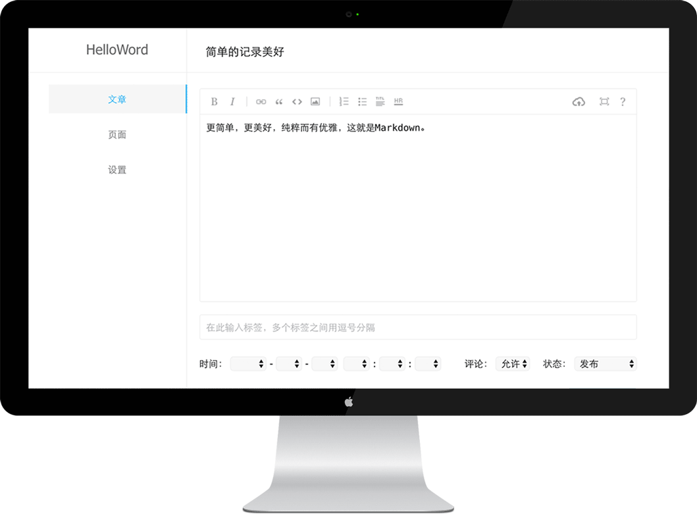

-

舒适的响应所有
完美的响应各个设备，令你的页面不仅可以漂亮的展现在桌面上，更可以漂亮的展现在每一个手持设备。
-

个性的个人主页
简单易懂的主题开发机制，轻松上手修改或者制作一份极具个性个人主页，听起来很容易？其实真的很容易。
-

简单的记录美好
配备优雅而又强大的编辑器，你可以非常愉悦的使用Markdown来记录你身边的点点滴滴。
遇到问题欢迎联系我们：
你可以前往GitHub提交新的issues，我们会在收到问题后安排修复或解答你的疑问。
同时，你也可以前往设计笔记任意页面留言你的问题，这是我的个人博客，收到你的问题后，我也会尽快安排时间修复的，同时，请务必留下您的联系方式，比如邮箱，方便修复后及时通知到你。
GitHub地址：https://github.com/Tokinx/McBlog
McBlog主题：https://github.com/Tokinx/Themes/tree/master/Mc-Themes